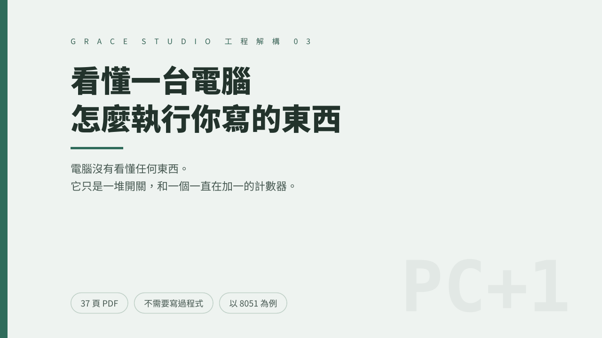
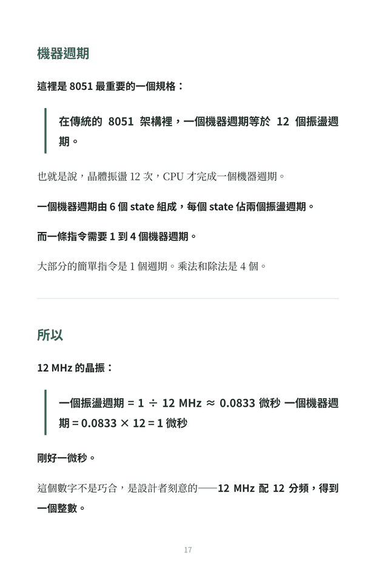
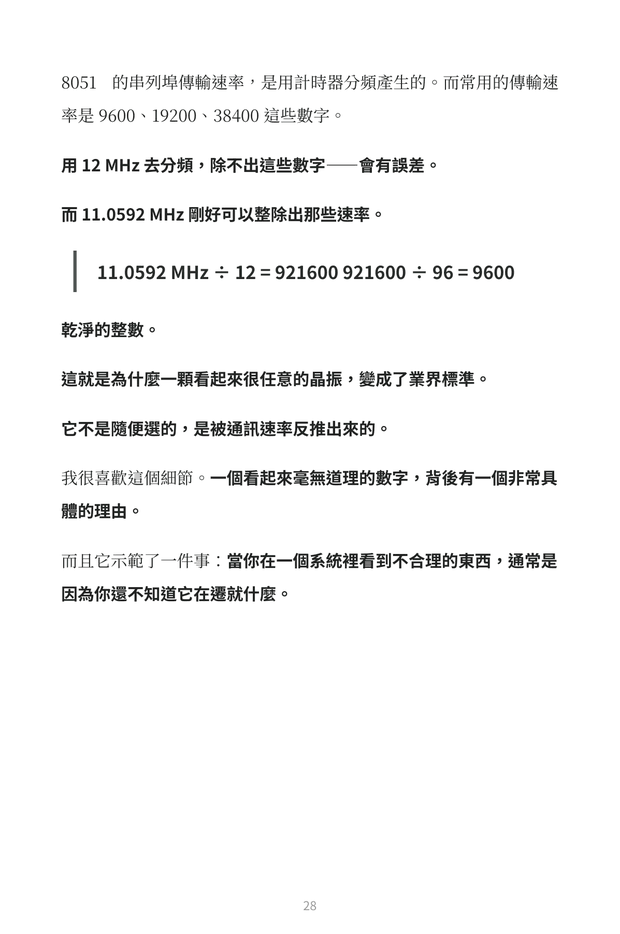
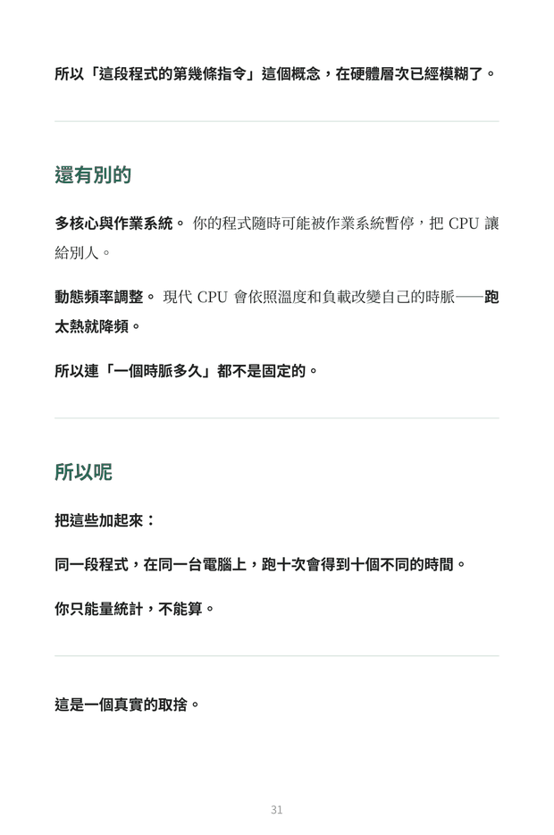

「程式由上往下執行」，只是因為有一個計數器在加一
沒有更深的機制。CPU 裡有一個暫存器記著「下一個指令在哪」，讀完自動加一，就這樣。if 是「有條件地改」那個計數器，迴圈是「把它設回去」——沒有「重複執行」這個概念，只有一個計數器被改回去了。
The Vault / BU-03 / 工程解構 03




左右滑動查看內頁 · 內頁實拍。
BU-03 · 工程解構 03 · 已上架
「電腦沒有看懂任何東西。它甚至不知道自己在做什麼，只是一堆開關照著固定規則一個接一個改變狀態。」
從一行程式碼，到一串開關。
這本書用一顆四十年前的晶片當主角。
8051 沒有現代 CPU 的亂序執行、分支預測、多層快取、多核心——它一次做一件事，照順序做。你可以從第一個時脈訊號，一路追到最後一個位元，這是現代電腦已經失去的東西。
NT$ 450 一次付清
結帳與檔案交付由 Gumroad 處理，本站不接觸你的付款資訊。
Why 8051
因為講不完。現代 CPU 有亂序執行、分支預測、多層快取、多核心，那些東西任何一項都可以寫成一本書，而且互相糾纏。8051 沒有那些，它一次做一件事，照順序做，做完再做下一件——你可以從第一個時脈訊號，一路追到最後一個位元。
在 12 MHz 的時脈下，8051 的一個機器週期剛好是 1 微秒。這代表你可以用「數指令」的方式，精確算出一段程式要跑多久：ADD A, 45H 1 個機器週期，MOV DPTR, #2000H 2 個機器週期，MUL AB 4 個機器週期，加起來就是 7 微秒——不是估計，是確定。每一次跑都是 7 微秒，今天是，明天也是，沒有誤差。
Seven Things
沒有更深的機制。CPU 裡有一個暫存器記著「下一個指令在哪」，讀完自動加一，就這樣。if 是「有條件地改」那個計數器，迴圈是「把它設回去」——沒有「重複執行」這個概念，只有一個計數器被改回去了。
讀到某個位元組，某幾條控制線被拉高，那些線打開通往加法器的路徑。同一個位元組永遠對應同一組控制線，沒有判斷，沒有例外。
不是 KB，不是 MB。而它夠用——因為它不是拿來跑作業系統的，是拿來控制洗衣機和冷氣的。大部分的處理器，追求的不是更快更大，是剛剛好。
8051 把硬體控制介面映射成記憶體位址。往某個位址寫一個值，不是存資料，是對硬體下命令。
按鈕被按下的時候，CPU 其實不知道——它做完當前這條指令、把「剛剛做到哪」存起來、跳去處理、處理完再取回來繼續。這不只是技術細節，是一種處理「意外」的通用模式：不要一直看有沒有事情發生，讓事情發生的時候來找你，你只要記得自己剛剛做到哪裡。
The Trade-off
在現代的電腦上，同一段程式跑十次會得到十個不同的時間。快取、分支預測、亂序執行、動態頻率調整，每一項都讓平均速度提升，但也讓單次執行時間變得不可預測。
這是一個真實的取捨：現代 CPU 用「確定性」換來了「速度」。而這也解釋了為什麼 8051 這種四十年前的東西，到今天還在安全氣囊、飛行控制、醫療設備裡——它不快，但它每一次都一樣。在某些場合，一樣比快重要。
Contents
FAQ
不需要。這本書講的是硬體怎麼執行指令的原理，不是程式語言教學，也不是程式設計指南。
不會。8051 的指令集有一百多條，定址模式有好幾種，計時器有多種工作模式，這本書沒有涵蓋那些——它寫的是機制，不是手冊。如果你要實際寫 8051 的程式，需要的是資料手冊和課本。書中的組合語言範例為說明用途所寫，實際撰寫請以所用組譯器的規範為準。
底層邏輯相同——一堆開關，一個計數器一路加一。但現代處理器多了快取、分支預測、亂序執行、動態頻率調整，書的最後一章會說明這些機制如何讓執行時間變得不可預測。
不是。作者是正在修這門課的學生，不是嵌入式系統工程師。書裡如果有錯，歡迎來信指正。
本商品為非以有形媒介提供之數位內容，依《消費者保護法》第 19 條及《通訊交易解除權合理例外情事適用準則》第 2 條第 5 款，經你於結帳前明示同意後發送存取權限者，不適用七日解除權，因此不受理一般性退款。
但若檔案本身無法開啟、內容損毀或交付品項錯誤，仍可於 7 日內來信申請修復或退款——這是法定的瑕疵擔保責任，不受前述條款影響。
工程解構 03
37 頁 PDF 加 EPUB，以 8051 為例，看懂電腦如何一步步執行你寫的東西。